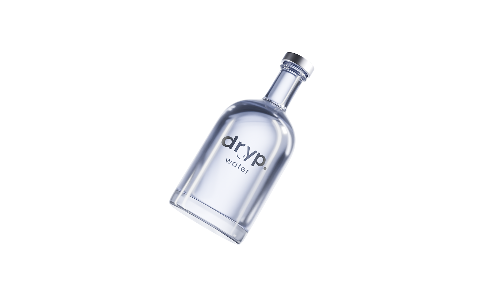
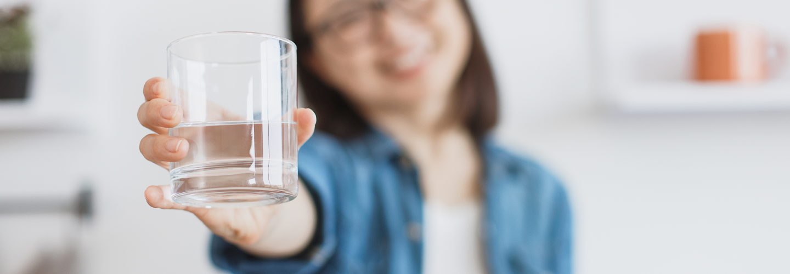
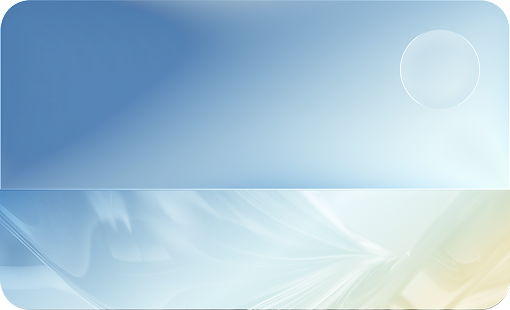
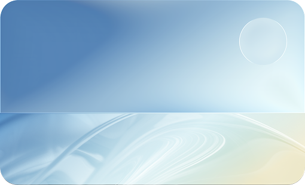
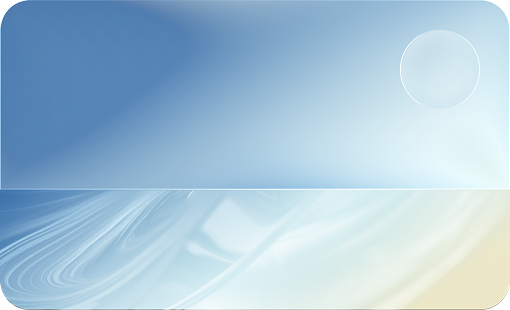
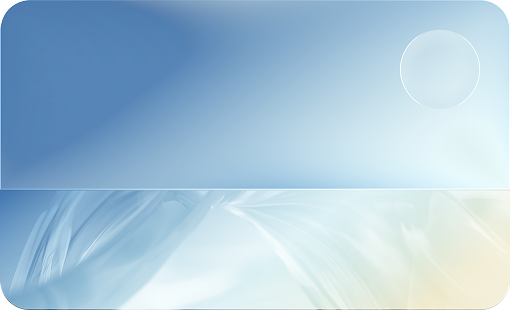
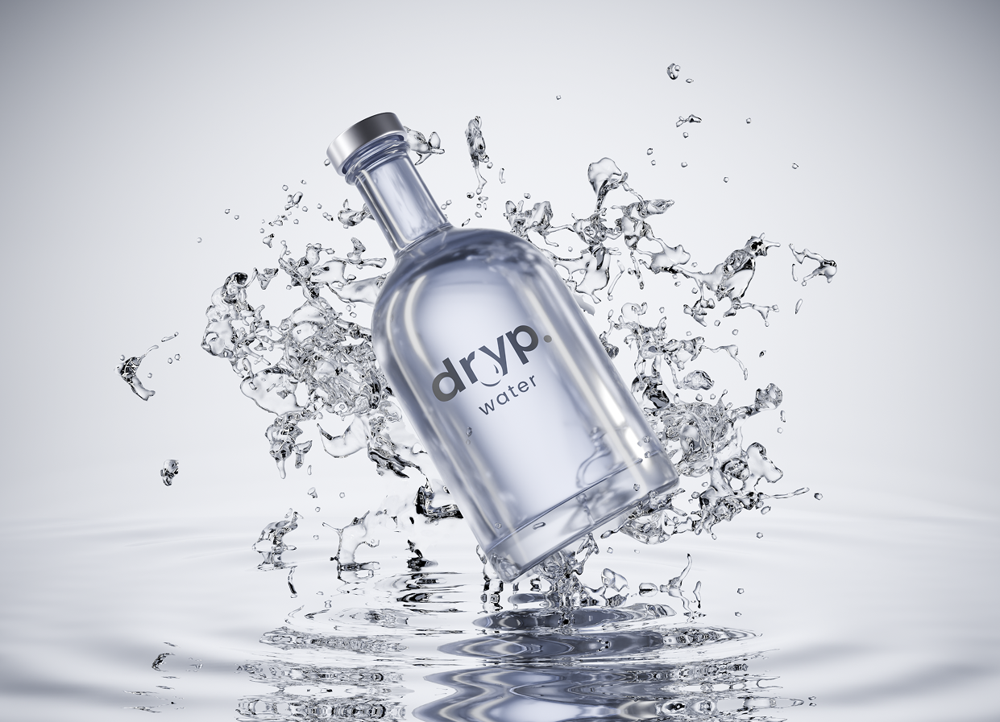

10+ év italtechnikai háttér
300+ aktív HoReCa partner

Egyszerű.
Átlátható.
Tervezhető.
Átlátható.
Tervezhető.
saját belső szervizcsapat
telepítés után is elérhető támogatás

better you
A DRYP egy modern, helyben szűrt ivóvíz- és szóda HoReCa-helyeknek. Palackos víz helyett. Telepítéssel, szervizzel.

A DRYP egy HoReCa-ra optimalizált víz- és szódarendszer, ami minden nap ugyanazt a tiszta, friss ízt adja – palackok nélkül.




Több mint 10 éves italtechnikai tapasztalattal és 300+ aktív HoReCa partnerrel biztos szakmai hátteret nyújtunk. Saját szervizcsapatunk a telepítéstől kezdve a folyamatos támogatásig végigkíséri partnereinket.
10+ év italtechnikai háttér
300+ aktív HoReCa partner
saját belső szervizcsapat
telepítés után is elérhető támogatás
Három csomag, különböző igényekre – ugyanazzal a stabil minőséggel és teljes körű támogatással.
Tisztított víz
Tiszta víz, egyszerűen.
Ideális választás azoknak a helyeknek, ahol a stabil minőség az első lépés.
Mit tartalmaz:
Ultrafiltrációs vízszűrő rendszer
Klór- és szennyeződésmentes ivóvíz
Éves karbantartás és szűrőcsere
Palackok nélküli, helyben szűrt víz
Üvegek: DRYP üvegek megvásárolhatók kedvezményesen
Ha tiszta, jó ízű vizet szeretnél, felesleges bonyolítás nélkül.
Érdekel a BASIC csomagTisztított víz + szóda + üvegek
A vendéglátás alapértelmezett megoldása.
Bérelhető, komplett rendszer azoknak, akik már szódára is szükségük van.
Mit tartalmaz:
Ultrafiltrációs vízszűrő rendszer
Tisztított ivóvíz + szóda
Elegáns csapolótornyos megoldás
Telepítés, szerviz, karbantartás
Bérelhető konstrukció
Üvegek: 10 db DRYP üveg ajándék / év
Gyorsabb kiszolgálás, kevesebb logisztika, egységes minőség.
Érdekel a PRO csomagTisztított víz + szóda + üvegek + több kiállás
Nagyobb forgalomra, komplex igényekre.
Ha több pult, több kiállás, több vendég van – akkor ez a rendszer dolgozik Neked.
Mit tartalmaz:
Több kiállásos, több rendszeres telepítés
Ultrafiltrációs vízszűrő rendszer minden kiállásnál
Ivóvíz és szóda párhuzamos kiszolgálása
Teljes körű szerviz és karbantartás
Testre szabott rendszerkialakítás
Üvegek: Rendszerenként 15 db DRYP üveg ajándék / év
Skálázható megoldás prémium helyeknek és láncoknak.
Érdekel a PREMIUM csomag
Telepítés és támogatás: nem hagyunk magadra a rendszerrel, hogy a vízkérdést egyszer és hosszú távra rendezd.
Kérj ingyenes konzultációt, és megnézzük, melyik DRYP megoldás illik a helyedhez.